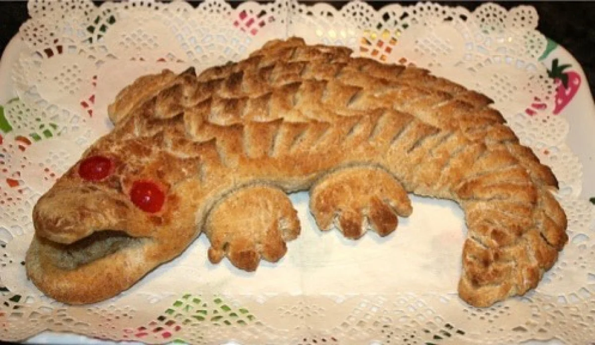

Nuestra Misión
"Ofrecer una experiencia dulce y memorable a nuestros clientes, proporcionando tortas y productos de repostería de alta calidad para todas las ocasiones."

Pastelería 1000 Sabores celebra su 50 aniversario como un referente en la repostería chilena. Famosa por su participación en un récord Guinness en 1995, busca renovar su sitio web para ofrecer una experiencia moderna a sus clientes.

Novedades:
Pastelería 1000 Sabores inaugura su nuevo producto, el "Quequedrilo", ganador de diversos premios internacionales.
— Diario El País, 2019
Incorporacion de destacados Chef a nivel nacional.
Nachito Pop, Jorge Zabaleta y lugares que hablan
Nuestra Visión
"Ser la pastelería líder en ventas online a nivel nacional, reconocida por nuestra innovación, sabor tradicional y el compromiso constante con la calidad de nuestros productos."